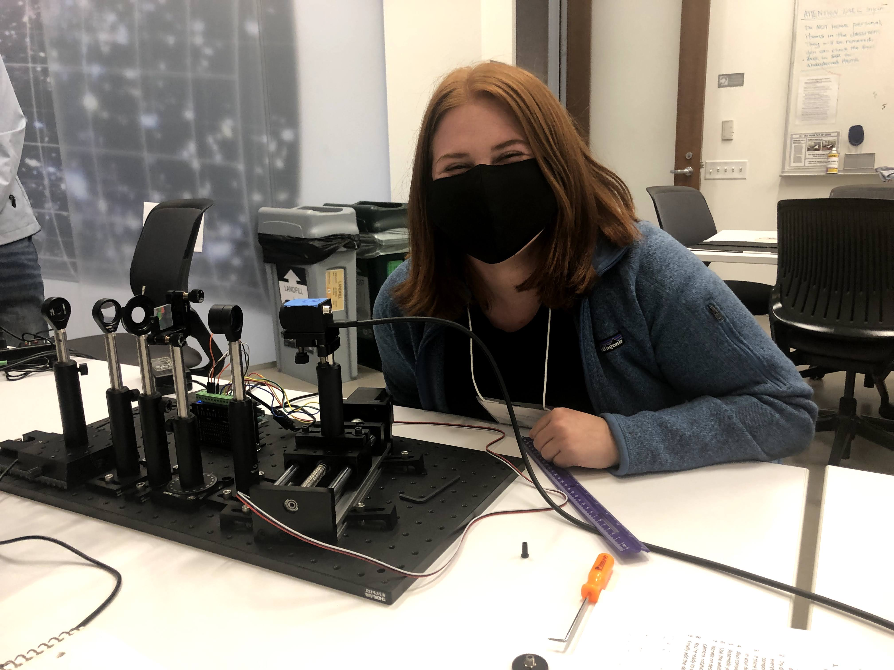

Hi, my name is Katelyn Horstman. I am a PhD candidate in Astrophysics at Caltech, where I work with Professor Dimitri Mawet in the Exoplanet Technology (ET) Lab. My research spans discovering unresolved hierarchical systems, including exo-satellites and binary brown dwarfs, exoplanet detection and characterization, and near-infrared instrumentation. After graduating from UCLA with departmental honors and a Bachelor of Science in Astrophysics in 2021, I have pursued a dual commitment to discovery and education, believing that the questions we ask about the universe are inseparable from who gets to ask them.
As an educator, I emphasize inquiry-based learning, collaboration, and conceptual understanding, while supporting students of varied backgrounds and levels of preparation. My work mentoring students and leading diversity and inclusion initiatives has shaped my conviction that recognition, transparent expectations, and community-building are essential in STEM education.